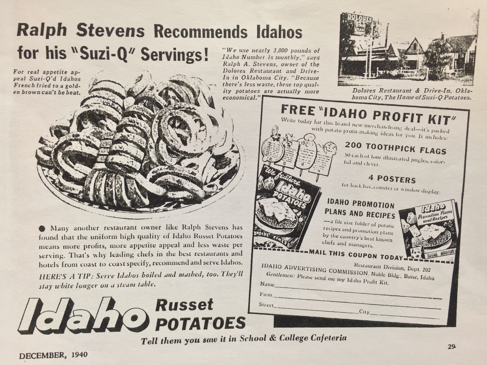

"Welcome to the ultimate destination for fry lovers! Whether you prefer
them crispy, seasoned to perfection, or loaded with tantalizing toppings,
our recipe hub is your passport to fry paradise. From classic golden fries
to inventive twists and international flavors, embark on a culinary journey
with our curated collection of recipes that celebrate the beloved fry in all
its glorious forms. Get ready to indulge in crispy, mouthwatering delights that
will elevate your fry game to a whole new level. Join us as we explore the art
of fry-making and uncover delicious recipes that will satisfy every craving and
leave you reaching for seconds."
!History!

It is believed that Belgians were the first to begin the process of frying strips of
potatoes, at some time between the late 17th and early 18th century. Legend has it that
the poor villagers of Meuse subsisted on a diet of fish caught in the local river, which
they would then fry before eating. When the river would freeze over each winter and fishing
was not to be had, the potato became a stand in for the fish and the earliest iteration
of French fries was born.
This explanation is not without its detractors, however,
as both France and Spain claim the French fry and it’s subsequent rise
to prominence are the results of their own culinary contributions. In any
case, in the United States the term “French fry” was alluded to when, in 1802,
Thomas Jefferson requested “potatoes served in the French manner” to accompany a
White House meal. By 1856, the term “French fried potatoes” was being used in print,
first and most notably in an E. Warren cookbook. The term worked its way into English
lexicon and the unpretentious side dish began its ascent from humble serving suggestion
to culinary legend.
Today, French fries continue to be a prolific
side dish all around the world.
BUT WHY THE POPULARITY?
So why are French fries so popular? Certainly there are other side
dishes that would pair well with a protein. While speculative, it is
believed that French fries first gained a following in Europe, popularized
by dishes including the aforementioned steak frites and moules-frites.
Subsequently, French fries became popular with American soldiers stationed
overseas during World War I. When they returned home, they sought their new
favorite snack to no avail. At this time, however, America was witnessing the
renaissance of the modern fast food restaurant. Inexpensive to prepare and with
an already established clientele, White Castle began offering French fries with
their hamburgers. The rest, as they say, is history.